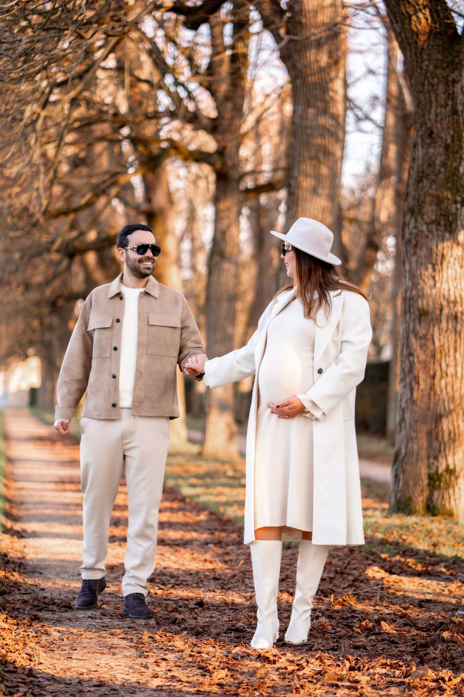
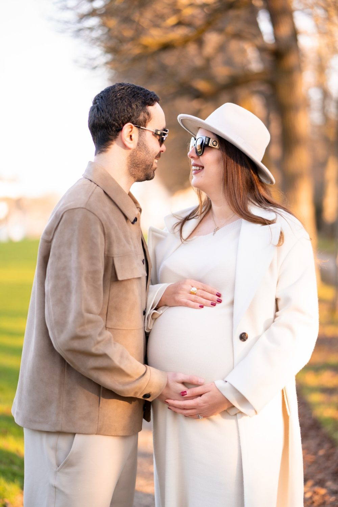
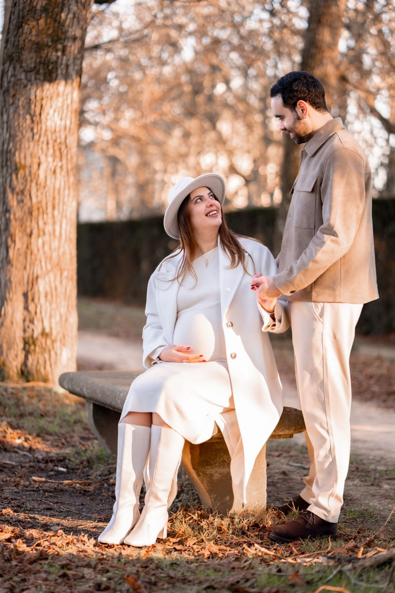

Séance photo grossesse à Cergy
Moderne, aéré, avec des perspectives. Une séance grossesse garde ce temps d'attente, le ventre arrondi, les mains qui se posent dessus, les mots que vous murmurez au bébé. Nous vous proposons de commencer à Parc François-Mitterrand, puis de poursuivre à Boucle de l'Oise.

Où faire votre shooting
Un shooting grossesse à Cergy se déroule au pied de la Tour Belvédère, sur les berges de la Boucle de l'Oise et au Parc François-Mitterrand. Au pied de la tour, la future maman pose de profil face à l'horizon, les mains sous le nombril. Sur les berges, la séance devient promenade, robe légère qui bouge dans l'herbe des prairies. Quelques secondes de vidéo gardent le geste du papa qui pose l'oreille contre le ventre. Un banc près des étangs du parc permet de souffler entre deux poses.
Sur place
Moderne, aéré, avec des perspectives. L'Axe Majeur est spectaculaire au coucher du soleil.
Nous proposons des portraits en extérieur, en lumière naturelle, ou à domicile pour plus d'intimité. Une courte vidéo met en mouvement les gestes, le regard, la voix d'un parent qui raconte l'attente.
Les grandes esplanades de Cergy sont très ouvertes au vent et au soleil. Prévoyez un gilet léger et une bouteille d'eau, et préférez la fin d'après-midi : la marche reste courte entre les spots et la lumière devient plus douce pour la peau.
À Cergy, vous êtes à RER A Cergy-Préfecture : nous préparons l'itinéraire entre les lieux avec vous.
Nos lieux pour cette séance
Parc François-Mitterrand
Grande pelouse et étangs. Un décor de nature calme pour poser sans fatigue, avec des bancs et de l'ombre.
Boucle de l'Oise
Berges et prairies. Une berge ou un plan d'eau pour des portraits lumineux et apaisants.
Axe Majeur
Belvédère et perspective monumentale.
Tour Belvédère
Tour de 30 mètres avec vue.




Avant de nous écrire
Où faire un shooting grossesse à Cergy en extérieur ?
Pour un shooting grossesse en extérieur à Cergy, nous aimons la Boucle de l'Oise pour ses prairies et ses berges calmes, et le Parc François-Mitterrand pour ses étangs. Ces deux lieux permettent de marcher peu et de s'asseoir facilement entre les poses.
À quel mois de grossesse prévoir la séance à Cergy ?
Une séance grossesse à Cergy se prévoit souvent à la fin du deuxième trimestre ou au début du troisième, quand le ventre est bien visible et que la marche reste confortable. Nous adaptons le parcours à votre forme du jour.
Comment venir à Cergy ?
RER A Cergy-Préfecture. Nous nous déplaçons avec notre matériel photo et vidéo.
Peut-on venir avec les enfants ?
Oui, les portraits avec les aînés sont souvent les plus touchants, nous prévoyons un moment dédié.
Parlons de votre mariage
Demander un devisGrossesse ailleurs en Île-de-France
© Le Couple Photographe · Photographe de mariage Paris & Île-de-France · Mis à jour le 10 octobre 2026
Demander un devis